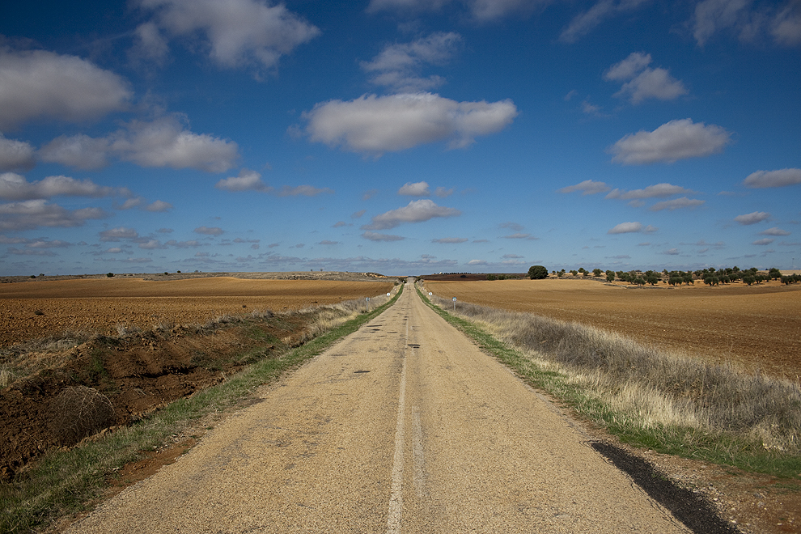

Zatrzymałem się w Lourdes w placówce Polskiej Misji Katolickiej.
Po kilku tygodniach podróży rowerem z przyjemnością skorzystałem z prysznica, wygodnego łóżka i polskiego obiadu z rosołem w roli głównej.
Na zdjęciu obok mnie i siostry zakonnej pielgrzymi z Opola. Pan po prawej wydaje się być podobny do Zenona Laskowika.
Natomiast ten po lewej do kabareciarza z Kabaretu Koń Polski. Nie wiem czy to byli oni.
Przedstawili się jako pielgrzymi z Opola a ja nie dopytywałem o więcej.
Pod Bazyliką w Lourdes wieczorem ma miejsce procesja ze świecami.
Zazwyczaj w oprawie naszych procesji prowadzi krzyż i świece czasem z kadzidłem potem ministranci, lektorzy, księża i wierni.
Tu w Lourdes urzekło mnie, że wyglądało to trochę inaczej.
Procesję do Bazyliki prowadziły osoby starsze i niepełnosprawni, również osoby na wózkach inwalidzkich prowadzone przez swoich opiekunów.
Nasunęło mi to na myśl, że procesja w Lourdes chce podkreślić jak na codzień powinniśmy uczyć się przezwyciężania trudności od chorych
oraz to że jako wspólnota powinniśmy sobie na wzajem pomagać i sobą się opiekować. Wtedy byłem jeszcze w pełni zdrową osobą.
Zawsze chciałem pomagać w wolontariacie ale nigdy nie miałem na to 100% odwagi.
W Hiszpanii w górach Sierra Nevada u stóp Pico de Veleta spotkałem trójkę rówieśników.
Niemkę, portugalczyka i hiszpankę.
Przyjechali porobić zdjęcia gdy z domu widzieli pierwszy śnieg w górach.
Na zdjeciu trochę odsuwam się od koleżanki ponieważ ostatni tydzień nie miałem możliwości wziąć kąpieli więc pewnie było to odemnie czuć.
Ponadto kilka dni wcześniej poplamiłem spodnie olejem z konserwy rybnej co potęgowało nieświeży zapach.
Zostawili mi swój adres gdybym po zdobyciu szczytu chciał odpocząć u nich w domu.
Z zaproszenia skorzystałem. Dostałem swój pokój, nakarmili mnie i mogłem zrobić pranie.
Zabrali mnie również na trening Capoeiry - angolskiej sztuki walki powiązanej z muzyką i tańcem.
Kolega portugalczyk zwierzył mi się, że owe koleżanki to jego partnerki
i nie jest szczęśliwy bo jedna w ich trójkącie nie chce drugiej.
Zaskoczył mnie bo nie sądziłem, że wśród europejczyków takie związki są popularne. Zapytałem go czy tak można w trójkę i się uśmięchnąłem.
W końcu moim celem był kraj muzułmański więc musiałem zmienić trochę mentalnośc.
Na południu Hiszpanii spotkałem Czecha, który opowiadał, że latem mieszka w Czechach a zimą jeździ od wielu lat
po ciepłych krajach rowerem. Żyć nie umierać. Mówił, że wraca z Portugalii i że napadli go tam cyganie i obrabowali.
Przestrzegał żebym tam nie jechał i że on już tam nigdy nie pojedzie. Ja stwierdziłem, że odbijam do Maroka na co on, że tam nigdy nie był
ale pewnie jest jeszcze bardziej niebezpiecznie. Pomyślałem, może nie będzie tak źle i się rozstaliśmy.
W Maroku na nocleg zaprosił mnie Brahim. To skrót od Ibrahim czyli po naszemu Abracham co znaczy Kochaj Ojca.
Za nocleg odwdzięczyłem się załataniem dętki w jego rowerze. Siedzieliśmy wieczorem przy stoliku i uczyliśmy się angielskiego.
Zapytał czy wierzę w Boga. Ponieważ pytanie było po angielsku nie użył słowa Allach tylko God odparłem, że wierzę.
Zapytał czy jestem muzułmaninem powiedziałem, że nie, że chrześcijaninem. Uśmiechnął się z zaciekawieniem.
Z Brachimem mam do tej pory kontakt przez internet jako jedyną osobą z całej podróży. Często pyta mnie kiedy przyjadę odwiedzić go jeszcze raz.
A ja mówię, że kiedyś odwiedzę. Kiedyś zapytał mnie czy Jezus jest prorokiem. Odparłem, że my wierzymy, że jest synem Bożym.
On na to, że Bóg jest tylko jeden i nie może mieć syna. Odparłem, że my też wierzymy, że Bóg jest jeden ale może być pod trzema postaciami.
Odparł na to, że nie rozumie i znów zakończyliśmy uśmiechami. Przestrzegł mnie, że tam gdzie chcę jechać mieszkąja źli ludzie.
Żebym uważał. Nie wiedziałem więc czego mam się spodziewać. Dojechałem na niewielkie wzgórze gdzie były sklepiki.
W jednym jak w rzeźni wisiały przekrojone kozy na sprzedaż. Potrzebowałem trochę curku więc wybrałem najtańsze cukierki Halls.
Zapłaciłem i zacząłem zjeżdżać ze wzgórza. Widziałem w oddali małą jakby osadę gdzie domy były z tektury, folii i szmat.
Wybiegła z niej grupka dziesięcioro dzieci i otoczyła mnie. Najstarszy i najwyższy coś przeraźliwie do mnie krzyczał
i pokazywał żebym mu coś dał. Wyciągnąłem Halls'a dałem mu i odjechałem do przodu. Pomyślałem to pewnie Ci
źli ludzie, o których mówił Brahim.
Znalazłem się na pustkowiu. Na stacji benzynowej nie było już miejsc noclegowych.
Powiedzieli mi, że niedaleko jest mała miejscowość i tam mnie ludzie przenocują.
Lecz na horyzoncie nie było nic widać. Pomyślałem nie zdążę przed zmrokiem a nie chcę się tu rozbijać z namiotem przy drodze.
Zatrzymałem typową marokańską ciężarówkę. Panowie wrzucili rower na pakę i pojechaliśmy do cywilizacji górską wyboistą drogą.
Dlatego zdjęcie takie rozmazane, poniewża częsło niemiłosiernie. Koledzy palili marihuanę, kierowca również.
Proponowlai mi również czy nie chcę zapalić ale od takich używek trzymam się z daleka.
Co nie zmienia faktu, że gdy czyta się np. o kierowcach w Himalajach palą oni również haszysz mówiąc, że to na chorobę wysokościową.
Za Marakeszem na południe, w rejonach gdzie ostatnio było trzęsienie ziemi, po lewej stronie ciągną się
pola golfowe a po prawej rezydencje bogatych marokańczyków, głównie generałów i polityków.
Postanowiłem rozbić namiot przy takiej rezydencji. Zadzwoniłem tylko na furtę zapytać czy mogę.
Otworzył chłopak i stwirdził, że nie ma problemu. Gdy rozkładałem namiot wyszedł drugi raz i zaprosił mnie do środka.
Jego najmłodszy brat odstąpił mi łóżko i spał na podłodze choć wcale tego nie chciałem.
Ich mama natomiast przygotowała pyszny kuskus z posiekanymi żołądkami baranimi.
Żołądki choć twarde i nie dało się ich pogryźć to nadawały niesamowity aromat całemu daniu.
Rano oprowadzili mnie po rezydencji. Okazało się, że są tylko w niej służbą i mieszkają w dwóch niewielkich wieżach warownych.
W zamian za posługę generałowi i pilnowanie posiadłości mają pracę i gdzie mieszkać.
Generał przyjeżdża tylko na lato więc mogliśmy trochę pozwiedzać. W Maroku isnieje bardzo duże rozwarstwienie społeczne pod względem ekonomicznym.
Jedni są bardzo bogaci a inni bardzo biedni.

Wjeżdżając do jednej z dolin gór Atlas spotkałem Francuza, który wracał z Kenii.
Mówił, że podróżuje na rowerze już 2 lata. Zrobiliśmy zdjęcie i pojechaliśmy w przeciwnych kierunkach.
Na samym szczycie Jebel Toubkal spotkałem parę naszych rodaków z Nowego Targu.
Mimo niesamowitego wiatru zamieniliśmy 2 zdania skąd oni się tu wzięli a skąd ja.
Mówili, że jeżdżą po świecie i zdobywają różne szczyty. Było to jednak dla mnie wielkie zaskoczenie,
że na sam koniec spotykam rodaków. Pomyślałem wtedy, że to znak od Boga, żebym pamiętał gdzie jest moje miejsce i nie myślał nawet o dalszej
podróży w głąb Afryki. Zbliżały się Święta Bożego Narodzenia więc zacząłem powoli wracać do Polski.
W dzień odpoczynkowy po zdobyciu szczytu poszedłem z francuskimi kolegami, którzy zatrzymali się w tym samym
hoteliku co ja, na niewielką przełęcz wysokości naszych Rysów (około 2500 m. n.p.m.). Dochodząc na miejsce
spłoszyliśmy stado owiec, które pasło się między szczytami. Pasterz w popłochu przeganiając owce skaleczył mocno dłoń.
Pomyślałem, narozrabialiśmy. Rana była szeroka i mocno krwawiwła. Jeden z owych francuzów był strażakiem.
Nie obce mu były kursy pierwszej pomocy oraz miał przy sobie jakiś brązowy płyn (Betadine) na takie rozległe rany.
Opatrzył fachowo rękę pasterza. Ja miałem przy sobie kiść winogron, którymi poczęstowałem wszystkich z nadzieją, że trochę cukru
i witamin rozładuje stres.
Nie chciało mi się już szukać hoteliku na nocleg. Pomyślałem, że przenocuję na dworcu autobusowym. Zasnąć
jednak nie mogłem gdyż towarzyszył mi ten kolega na zdjęciu. Całą noc z bardzo małym zasobem słów i słownikiem w telefonie
rozmawialiśmy na różne tematy a czasem w kółko o tym samym. Marokański kolega czuwał całą noc a rano wsadził mnie
do odpowiedniego autobusu, co nie było takie oczywiste, ponieważ autobusy w Maroku nie są podpisane gdzie jadą ani nie ma
na dworcu żadnych rozkładów jazdy. Nie wziął też żadnego napiwku (bakszysz). W nocy dosiadła się do nas kobieta w średnim wieku. Kolega powiedział, że jest opętana
ponieważ jest samotna i mąż ją zostawił. Biegała dziwnie po dworcu zaczepiała nas i czasem krzyczała. Kolega marokańczyk
czasem coś do niej mówił i sprzedawł jej żartobliwe kuksańce.
Krajobrazy, czyli jak piękny świat dostaliśmy od Stwórcy
Berberyjska wioska w Atlasie Wysokim
Pustynia w Maroku
Droga w Hiszpiani (Andaluzja)
Wschód słońca w Andaluzji
Sprzedaż jabłek w Atlasie Wysokim
Sprzedaż napojów przy szlaku na Jebel Toubkal. Sklepiki są zaopatrywane przez osiołki.
Dojazd do wioski w górach
Społeczność górska
Pierwsze śniegi w górach Sierra Nevada (Hiszpania)

Droga w Kastylii (Hiszpania)
Na szczycie Pico de Veleta (Hiszpania)
Płaskowyż w Maroku
Pireneje
Masyw Atlasu Wysokiego widziany z przedmieści Marakeszu (przewyższenie 3000 m.)

Mapa podróży. Jechałem z Krakowa na Czechy a wracałem autobusem przez Rumunię.